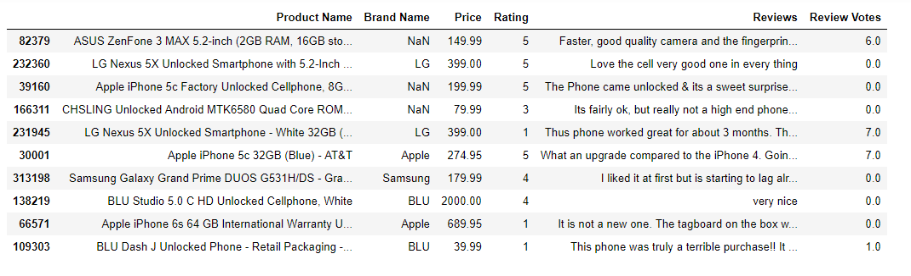
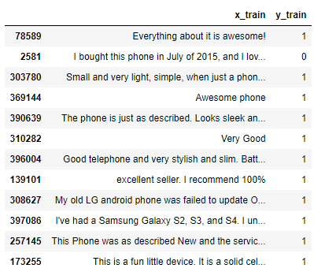

Amazon review sentiment analysis:
Resources: https://www.coursera.org/learn/python-text-mining/home/week/3
To download the csv file you must log in to Coursera and register for this course and download. You can choose "audit only" to get free access.
We are going to perform sentiment analysis on amazon reviews using bag of words, TF-IDF, n-grams to set up vocabularies and logistic regression model to train the model and make predictions. I am also going to check our model's accuracy using ROC and AUC curve.
Step 1:
Import dependencies and csv file.
import pandas as pd
import numpy as np
import os
amazon_data_path = os.path.abspath(r'C:\Users\Desktop\Amazon_Unlocked_Mobile.csv')
df = pd.read_csv(amazon_data_path)
df = df.sample(frac=0.1, random_state=10)
df.tail(10)

frac=0.1 => randomly use 10% of data.
random_state=10 => giving a seed to random 10% of data so everytime random_stat=10 is called we use the same dataset
Next we want to drop any row that have null value, get rid of neutral rating 3, create new column that will have value of 1 if rating is above 3 and 0 if below 3. This will be our target column.
df.dropna(inplace=True)
df = df.loc[df["Rating"] != 3]
df["Positively Rated"] = np.where(df["Rating"]>3, 1, 0)
df["Positively Rated"].mean()
>>> 0.74717766...
since positive reviews have value of 1 and negative reviews have value of 0 if we average sum of all values it will tell us skewness of our data. It clearly tells us there are more positive reviews than negative.
We are going to use "Reviews" column as our feature matrix and "Positively Rated" column as target array. From this data split into train set and test set to avoid bias. This is critical step since if we use same dataset for testing and training accuracy of prediction will be very biased, overfitted. Sci-kit learn provides train_test_split method which separates data into train and test sets.
from sklearn.model_selection import train_test_split
X_train, X_test, y_train, y_test = train_test_split(df['Reviews'],
df['Positively Rated'],
test_size=0.25,
random_state=0)
# This is what train data set looks like.
display_df = pd.DataFrame({"x_train": X_train,
"y_train": y_train})
display_df.head(20)

By default, the testset is 25% of total data. The default will change in version 0.21. It will remain 0.25 only if train_size is unspecified, otherwise it will complement the specified train_size
CountVectorizer
When you fit your dataset it will perform the following:
- Tokenize Text => split each word, each word is called a Token.
- Lowercase all tokens => so "Customer" and "customer" are considered as same
- Eliminate tokens consisting of less than 2 letters => to eliminate symbols, commas, etc.
there are much more parameters you could insert such as stop_words which eliminates common words in a language such as "but", "then", "is", etc. You can read documentation to find out more: Click Here
from sklearn.feature_extraction.text import CountVectorizer
vec = CountVectorizer().fit(X_train)
vec.get_feature_names()[::2000]

grabbing every 2000th feature we can get some insight to what tokens are in our vocabulary. Now that we fitted our data using CountVectorizer we will create a sparce matrix.
This is called Bag of Words approach where our vacabulary, consisting all tokens is bag of words. From here we want to find out how many tokens each of our document(each review) uses from bag of words i.e. vocabulary. Value of 1 will be given for each used word in vocabulary. Since our vocaulary is created from taking words from all the reviews most of columns for each reviews will have 0.
Note: BOW ignores structure and only considers occurence of each word.
X_train_vectorized = vec.transform(X_train)
Logistic Regression
For more detailed application: Intro to Logistic Regression
Briefly, it is used for labelling data in our case wheter or not review is positive or negative. This model is S shaped curve and given a threshold point if it goes above, review is considered positive otherwise negative.
from sklearn.linear_model import LogisticRegression
model = LogisticRegression()
model.fit(X_train_vectorized, y_train)
# Default solver type is currently "liblinear", which will change to "lbfgs"
We've trained our Logistic Regression model using train set
Now lets give our trained model X_test dataset and see how well it distinguish positive and negative review.
from sklearn.metrics import roc_auc_score
prediction = model.predict(vec.transform(X_test))
print(roc_auc_score(y_test, prediction))
>>> 0.8974332776669326
Notice that we needed to transform X_test dataset to same form as when training.
Also computed accuracy of our model using ROC and AUC score. To have deeper understanding of Receiver Operating Characteristic curve and Area Under ROC curve: ROC_AUC curves explained
Printing words with smallest coefficients => negative words and largest coefficients => positive words.
feature_names = np.array(vec.get_feature_names())
sorted_coef_index = model.coef_[0].argsort()
print(f'Smallest Coefs:\n {feature_names[sorted_coef_index[:10]]} \n')
print(f'Largest Coefs:\n {feature_names[sorted_coef_index[:-11:-1]]}')
>>> Smallest Coefs:
['worst' 'terrible' 'slow' 'junk' 'poor' 'sucks' 'horrible' 'useless'
'waste' 'disappointed']
Largest Coefs:
['excelent' 'excelente' 'excellent' 'perfectly' 'love' 'perfect' 'exactly'
'great' 'best' 'awesome']
Term Frequency- Inverse Document Frequency
Tf-idf goes through same step as CountVectorizer in creating a vocabulary. The difference is that it will weigh each words, giving more weight on words that are assumed to have greater influence on target value and adjust the fact that some words appear more frequently in general such as "The", "is", etc. It is weighed by the following:
- If word occur often in all documents or rarely occurs it is given little weight.
- If word only occur often in some or one document it is given large weight.
from sklearn.feature_extraction.text import TfidfVectorizer
vect = TfidfVectorizer(min_df=5).fit(X_train)
len(vect.get_feature_names())
>>> 5442
min_df = minimum document frequency = minimum number of reviews a token has to be in for it to be placed in the vocabulary i.e. for the word "machine" to be placed in vocab it needs to appear in at least 5 reviews
There are significant drop on number of features.
This is a good sign, if we could get same or better accuracy using smaller features because it will be more efficient to train and test models => less computing.
Taking same steps as CountVectorizer lets train it using same train data set and test it using same test set then calculated accuracy.
X_train_vectorized = vect.transform(X_train)
model = LogisticRegression()
model.fit(X_train_vectorized, y_train)
predictions = model.predict(vect.transform(X_test))
print('AUC: ', roc_auc_score(y_test, predictions))
>>> AUC: 0.889951....
Accuracy of our model is very similar to accuracy score from CountVectorizer even though we used much less features.
Even though our accuracy score seems fine however we are only considering 1-gram words. Meaning we are considering words like "Not working" as two separate words instead of one word. This is a problem since using 1-gram words only it will positively rate "working".
# Using tf-idf we can see both sentence is labelled as negative (0) even though first sentence should be positive.
print(model.predict(vect.transform(['not an issue, phone is working',
'an issue, phone is not working'])))
>>> [0,0]
N-grams
Here we will acknowledge uni-gram and bi-gram by passing in extra parameter into TfidfVectorizer.
vect = TfidfVectorizer(min_df=5, ngram_range=(1,2)).fit(X_train)
X_train_vectorized = vect.transform(X_train)
len(vect.get_feature_names())
Number of features increased since we are considering uni-grams and bi-grams
model = LogisticRegression()
model.fit(X_train_vectorized, y_train)
predictions = model.predict(vect.transform(X_test))
print('AUC: ', roc_auc_score(y_test, predictions))
>>> AUC: 0.9110661794597458
It is clear that our accuracy score improved by adding just bi-gram. Try using tri-grams, 4-grams and so on but keep in mind number of feature increases significantly.
print(model.predict(vect.transform(['not an issue, phone is working',
'an issue, phone is not working'])))
>>> [1,0]
Now it correctly identifies bi-gram and classify two sentences accordingly.
Finally, I want to say thank you for reading my blog. There are variety of methods when it comes to NLP therefore do not stop here but explore! I will be creating feedback section thus feel free to ask any questions and give feedback on what you think would improve readabilty of my blog.